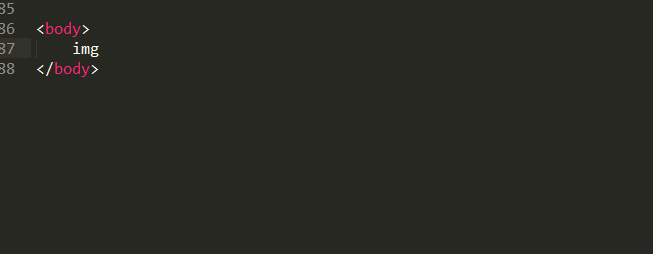
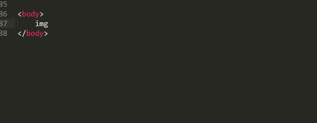

1、回首HTML、CSS
2、HTML5、CSS3新技能
3、文件之间的组织、存放
4、前端编码利器Sublime Text
<!doctype html>
<html lang="zh-CN">
<head>
<meta charset="utf-8" />
<title>html编码</title>
<link href="css/index.css" rel="stylesheet" />
</head>
<body>
<div id="header">
</div>
<div id="conatiner">
<div id="left">
</div>
<div id="right">
</div>
</div>
<div id="footer">
</div>
<script src="js/index.js"></script>
</body>
</html>
结构性元素:
p 表示段落,只能包含内联元素,不能包含块级元素;
div 本身无特殊含义,用于布局.
br 表示换行符;hr 表示水平分割线;
h1-h6 表示标题：
pre 表示一段格式化好的文本;
文本元素：
a 存在href属性时表示链接;
em 表示句意强调,可用于表示不同的心情或语调;
strong 表示重要性强调,abbr 表示缩写;
sub,sup 主要用于数学和化学公式,
span 本身无特殊含义；
ins,del 文档中增加(插入)和删除;
媒体元素：
img 插入图片,给img元素增加alt属性,
列表元素：
dl 表示关联列表,dd是对dt的解释;
ul 表示无序列表;
ol 表示有序列表,可用于排行榜等;
li 表示列表项,必须是ul/ol的子元素;
<body>
<font size="20" color="red">
<b>
在很久很久以前，web上没有css，
只要内容是干货就好了.
用户不是程序员
他们讲究外表，讲究炫酷，讲究如何的个性
W3C组织就为了满足这些人的胃口:
提供了一些装饰html标记的标记，比如strong，font,b,u
</b>
</font>
</body>
有三种方法可以在站点网页上使用样式表：
外联式Linking（也叫外部样式）：将网页链接到外部样式表。
<link rel="stylesheet" type="text/css" href="mystyle.css">
嵌入式Embedding（也叫内页样式）：在网页上创建嵌入的样式表。
<head>
<style type="text/css">
body {background-color: red}
p {margin-left: 20px}
</style>
</head>
内联式Inline（也叫行内样式）：应用内嵌样式到各个网页元素。
<p style="color: red; margin-left: 20px">
This is a paragraph
</p>
其中，优先级：内联式 > 嵌入式 > 外联式
<canvas> 标签定义图形，比如图表和其他图像。该标签基于 JavaScript 的绘图 API
<audio> 定义音频内容
<video> 定义视频（video 或者 movie）
<source> 定义多媒体资源 <video> 和 <audio>
<article> 定义解释文章元素
<aside> 定义页面的侧边栏内容
<details> 用于描述文档或文档某个部分的细节
<dialog>定义对话框，比如提示框
<footer> 定义 section 或 document 的页脚。
<header> 定义了文档的头部区域
<mark> 定义带有记号的文本。
<nav> 标签定义导航链接的部分
<progress> 定义任何类型的任务的进度。
<section> 定义文档中的节（section、区段）。
<time> 定义日期或时间。
选择器 [att^=val] [att*=val] first-child nth-child(n) :empty
背景和边框 border-radius border-image
文字特效 box-shadow
2D/3D转换 transform: rotate | scale | skew | translate |matrix;
动画 animation
多列布局 包括column-width、column-count、column-gap三个值
 


结语：
谢谢,听我的咋呼...
好书共分享，阅读丰富人生。
相互学习,共同提高.
刘明明